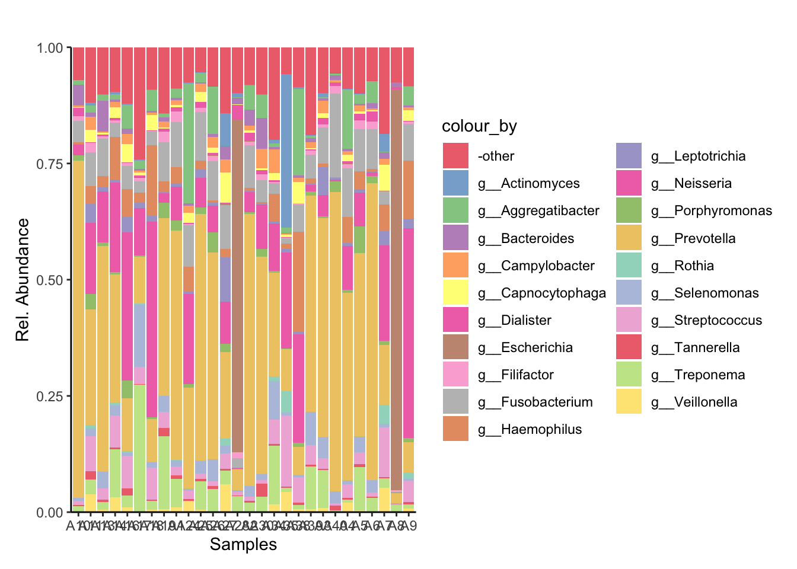
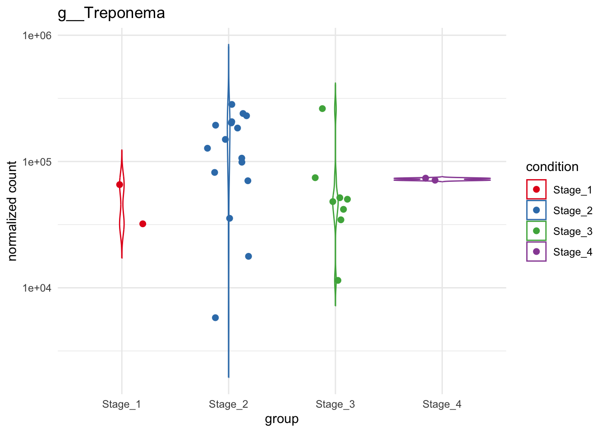

# Make sure these are all installed as packages first
# Load necessary libraries
library(readxl)
library(pheatmap)
library(dplyr)
library(tidyr)
library(tibble)
library(RColorBrewer)
library(miaViz)
library(scater)
library(mia)
library(TreeSummarizedExperiment)
library(here)
library(readr)
library(phyloseq)
library(DESeq2)
library(ggrepel)
library(gridExtra)
library(vegan)Noma Metagenomics: Short-read taxonomic based metagenomic analysis of noma swab vs saliva samples in R
This analysis was used in the short-read (Illumina) taxonomic based metagenomic analysis of swab and saliva samples taken from the same patients with noma. The analysis was conducted in R and the paper is posted as a preprint on bioRxiv:
Shotgun metagenomic analysis of the oral microbiomes of noma patients reveals a novel disease-associated organism and potential avenues for disease prevention
Olaleye, M., O’Ferrall A.M., Goodman, R.N. et al.
1. Getting Started in R
1.1 Installing and Loading Packages
Install all necessary packages into R.
2. Import and Clean Data
We will be importing MetaPhlan style Bracken data
First we’ll write a function to import MetaPhlan style bracken data
2.2 Load taxonomic data
file_path = "../data/noma_HMP_saliva_bracken_MetaPhlan_style_report_bacteria_only_A1_A40_plus_A14.txt"
# Import data
tse_metaphlan_sal_swb = loadFromMetaphlan(file_path)
# Defining the TSE for the rest of the script
tse_metaphlan_sal_swbclass: TreeSummarizedExperiment
dim: 6187 28
metadata(0):
assays(1): counts
rownames(6187): s__Coprothermobacter_proteolyticus
s__Caldisericum_exile ... s__Erysipelothrix_phage_SE-1
s__Streptococcus_phage_PH10
rowData names(8): Kingdom Phylum ... Species clade_name
colnames(28): A10 A11 ... A8 A9
colData names(0):
reducedDimNames(0):
mainExpName: NULL
altExpNames(5): Phylum Class Order Family Genus
rowLinks: NULL
rowTree: NULL
colLinks: NULL
colTree: NULL2.2 Add metadata
patient_metadata = read_excel("../data/micro_study_metadata.xlsx")
sample_to_patient = read_excel("../data/sample_to_patient_A1_A40.xlsx")
metadata = dplyr::inner_join(patient_metadata, sample_to_patient, by = "respondent_id")
metadata_2 = metadata %>% filter(sample_name %in% colnames(tse_metaphlan_sal_swb))
View(metadata_2)
coldata = data.frame(sample_name = colnames(tse_metaphlan_sal_swb))
metadata_3 = dplyr::left_join(coldata, metadata_2, by = "sample_name")
# Create a DataFrame with this information
metadata_df = DataFrame(metadata_3)
rownames(metadata_df) = metadata_3$sample_name
t_metadata_df = t(metadata_df)
ncol(t_metadata_df)[1] 28colData(tse_metaphlan_sal_swb)DataFrame with 28 rows and 0 columnscolnames(metadata_df)[1] "sample_name" "respondent_id"
[3] "sex" "age"
[5] "noma_stage_on_admission" "sample_type" # Coun specific metadata
# count saliva and swab samples
metadata_3 %>% group_by(sample_type) %>% summarise(Count = n())# A tibble: 2 × 2
sample_type Count
<chr> <int>
1 saliva 17
2 swab 11# A tibble: 2 × 2
#sample_type Count
#<chr> <int>
# 1 saliva 17
# 2 swab 11
# count participants with both swab and saliva
metadata_3 %>% group_by(respondent_id) %>% summarise(Count = n())# A tibble: 19 × 2
respondent_id Count
<chr> <int>
1 N1 1
2 N10 2
3 N11 1
4 N12 1
5 N13 2
6 N14 1
7 N15 1
8 N16 1
9 N17 2
10 N18 2
11 N19 1
12 N2 1
13 N3 1
14 N4 2
15 N5 2
16 N6 2
17 N7 2
18 N8 1
19 N9 2metadata_3 %>% group_by(respondent_id) %>% summarise(Count = n()) %>% filter(Count == 2)# A tibble: 9 × 2
respondent_id Count
<chr> <int>
1 N10 2
2 N13 2
3 N17 2
4 N18 2
5 N4 2
6 N5 2
7 N6 2
8 N7 2
9 N9 2metadata_3 %>% group_by(respondent_id) %>% summarise(Count = n()) %>% filter(Count == 2) %>% summarise(Count = n())# A tibble: 1 × 1
Count
<int>
1 9# next pull out respondants with both saliva and swab data
metadata_3 %>% group_by(respondent_id) %>% summarise(Count = n()) %>% filter(Count == 2)# A tibble: 9 × 2
respondent_id Count
<chr> <int>
1 N10 2
2 N13 2
3 N17 2
4 N18 2
5 N4 2
6 N5 2
7 N6 2
8 N7 2
9 N9 2swb_and_sal = metadata_3 %>% group_by(respondent_id) %>% summarise(Count = n()) %>% filter(Count == 2)
ids_to_remove = swb_and_sal %>% pull(respondent_id)
swb_and_sal_filtered = metadata_3 %>% filter(!respondent_id %in% ids_to_remove)
# count saliva and swab samples without particpants above
swb_and_sal_filtered %>% group_by(sample_type) %>% summarise(Count = n())# A tibble: 2 × 2
sample_type Count
<chr> <int>
1 saliva 8
2 swab 2# Print results
print(ids_to_remove) # Output as a character vector[1] "N10" "N13" "N17" "N18" "N4" "N5" "N6" "N7" "N9" # Add this DataFrame as colData to your TreeSummarizedExperiment object
colData(tse_metaphlan_sal_swb) = metadata_df2.3 Inspecting the Data
2.4 Converting TSE to other common data formats e.g. Phyloseq
# Use makePhyloseqFromTreeSE from Miaverse
phyloseq_metaphlan = makePhyloseqFromTreeSE(tse_metaphlan_sal_swb)3. Non-parametric statistical tests
3.1 Preparing the data
# See above "Converting TSE to other common data formats e.g. Phyloseq"
# Use makePhyloseqFromTreeSE from Miaverse
# make an assay for abundance
tse_metaphlan_sal_swb = transformAssay(tse_metaphlan_sal_swb, assay.type="counts", method="relabundance")
taxonomyRanks(tse_metaphlan_sal_swb)[1] "Kingdom" "Phylum" "Class" "Order" "Family" "Genus" "Species"# make an altExp and matrix for order
altExp(tse_metaphlan_sal_swb,"Genus")class: TreeSummarizedExperiment
dim: 1687 28
metadata(0):
assays(1): counts
rownames(1687): g__Coprothermobacter g__Caldisericum ... g__Phicbkvirus
g__Casadabanvirus
rowData names(8): Kingdom Phylum ... Species clade_name
colnames(28): A10 A11 ... A8 A9
colData names(0):
reducedDimNames(0):
mainExpName: NULL
altExpNames(0):
rowLinks: NULL
rowTree: NULL
colLinks: NULL
colTree: NULLtse_metaphlan_sal_swb_genus = altExp(tse_metaphlan_sal_swb, "Genus")
# Check that colData was added successfully
colData(tse_metaphlan_sal_swb_genus) = metadata_df
metadata_noma_genus = as.data.frame(colData(tse_metaphlan_sal_swb_genus))
# species
phyloseq_noma = makePhyloseqFromTreeSE(tse_metaphlan_sal_swb)
# genus
phyloseq_noma = makePhyloseqFromTreeSE(tse_metaphlan_sal_swb_genus)
phyloseq_noma_esd = transform_sample_counts(phyloseq_noma, function(x) 1E6 * x/sum(x))
ntaxa(phyloseq_noma_esd) [1] 1687nsamples(phyloseq_noma_esd) [1] 283.2 Permanova across entire dataset
set.seed(123456)
# Calculate bray curtis distance matrix on main variables
noma.bray = phyloseq::distance(phyloseq_noma_esd, method = "bray")
sample.noma.df = data.frame(sample_data(phyloseq_noma_esd))
permanova_all = vegan::adonis2(noma.bray ~ sex , data = sample.noma.df)
permanova_allPermutation test for adonis under reduced model
Permutation: free
Number of permutations: 999
vegan::adonis2(formula = noma.bray ~ sex, data = sample.noma.df)
Df SumOfSqs R2 F Pr(>F)
Model 1 0.1930 0.04626 1.2612 0.294
Residual 26 3.9798 0.95374
Total 27 4.1729 1.00000 Next we will test the beta dispersion
# All together now
vegan::adonis2(noma.bray ~ sex, data = sample.noma.df)Permutation test for adonis under reduced model
Permutation: free
Number of permutations: 999
vegan::adonis2(formula = noma.bray ~ sex, data = sample.noma.df)
Df SumOfSqs R2 F Pr(>F)
Model 1 0.1930 0.04626 1.2612 0.263
Residual 26 3.9798 0.95374
Total 27 4.1729 1.00000 beta = betadisper(noma.bray, sample.noma.df$sex)
permutest(beta)
Permutation test for homogeneity of multivariate dispersions
Permutation: free
Number of permutations: 999
Response: Distances
Df Sum Sq Mean Sq F N.Perm Pr(>F)
Groups 1 0.06942 0.069419 2.3454 999 0.153
Residuals 26 0.76954 0.029598 # we don't want this to be significant 3.3 Anosim across entire dataset
condition_group = get_variable(phyloseq_noma_esd, "sex")
set.seed (123456)
anosim(distance(phyloseq_noma_esd, "bray"), condition_group)
Call:
anosim(x = distance(phyloseq_noma_esd, "bray"), grouping = condition_group)
Dissimilarity: bray
ANOSIM statistic R: -0.02907
Significance: 0.669
Permutation: free
Number of permutations: 999condition_ano = anosim(distance(phyloseq_noma_esd, "bray"), condition_group)
condition_ano
Call:
anosim(x = distance(phyloseq_noma_esd, "bray"), grouping = condition_group)
Dissimilarity: bray
ANOSIM statistic R: -0.02907
Significance: 0.644
Permutation: free
Number of permutations: 9993.4 MRPP across entire dataset
#condition
noma.bray = phyloseq::distance(phyloseq_noma_esd, method = "bray") # Calculate bray curtis distance matrix
condition_group = get_variable(phyloseq_noma_esd, "sex") # Make condition Grouping
# Run MRPP
set.seed(123456)
vegan::mrpp(noma.bray, condition_group, permutations = 999,
weight.type = 1, strata = NULL, parallel = getOption("mc.cores"))
Call:
vegan::mrpp(dat = noma.bray, grouping = condition_group, permutations = 999, weight.type = 1, strata = NULL, parallel = getOption("mc.cores"))
Dissimilarity index: bray
Weights for groups: n
Class means and counts:
Female Male
delta 0.4277 0.567
n 12 16
Chance corrected within-group agreement A: 0.007183
Based on observed delta 0.5073 and expected delta 0.511
Significance of delta: 0.266
Permutation: free
Number of permutations: 9993.4 Running non-parametric tests across several variables
colnames((colData(tse_metaphlan_sal_swb_genus)))[1] "sample_name" "respondent_id"
[3] "sex" "age"
[5] "noma_stage_on_admission" "sample_type" # Define the list of metadata variables you want to test
variables_to_test = c("sex", "age", "noma_stage_on_admission", "respondent_id", "sample_type")
# Set a seed for reproducibility of permutation-based tests
set.seed(123456)
bray_dist = phyloseq::distance(phyloseq_noma_esd, method = "bray")
# Extract the sample data into a data frame for use with adonis2
sample_df = data.frame(sample_data(phyloseq_noma_esd))
# Create an empty list to store the results from each iteration
results_list = list()
# Loop through each variable name in the 'variables_to_test' vector
for (variable in variables_to_test) {
message(paste("Running tests for variable:", variable))
# PERMANOVA (adonis2)
# Create the statistical formula dynamically for the current variable
formula = as.formula(paste("bray_dist ~", variable))
# Run the PERMANOVA test using the adonis2 function
permanova_res = vegan::adonis2(formula, data = sample_df, permutations = 999)
# Extract the p-value from the results. It's in the 'Pr(>F)' column.
p_permanova = permanova_res$`Pr(>F)`[1]
# ANOSIM
# Get the grouping factor (the actual variable data) from the phyloseq object
grouping_factor = phyloseq::get_variable(phyloseq_noma_esd, variable)
# Run the ANOSIM test
anosim_res = vegan::anosim(bray_dist, grouping_factor, permutations = 999)
# Extract the p-value (significance) from the ANOSIM result
p_anosim = anosim_res$signif
# MRPP
# The grouping factor is the same as for ANOSIM
# Run the MRPP test
mrpp_res = vegan::mrpp(bray_dist, grouping_factor, permutations = 999)
# Extract the p-value from the MRPP result
p_mrpp = mrpp_res$Pvalue
# Store Results
# Store the p-values for the current variable in our results list.
# We create a small data frame for this iteration's results.
results_list[[variable]] = data.frame(
Variable = paste0(variable, "."),
`permanova.` = p_permanova,
`anosim.` = p_anosim,
`mrpp.` = p_mrpp,
# 'check.names = FALSE' prevents R from changing our column names
check.names = FALSE
)
}Running tests for variable: sexRunning tests for variable: ageRunning tests for variable: noma_stage_on_admissionRunning tests for variable: respondent_idRunning tests for variable: sample_type# Combine the list of individual data frames into one final table
final_results_table = do.call(rbind, results_list)
# Clean up the row names of the final table
rownames(final_results_table) = NULL
# Print the final, consolidated table to the console
print(final_results_table) Variable permanova. anosim. mrpp.
1 sex. 0.294 0.644 0.217
2 age. 0.001 0.014 0.001
3 noma_stage_on_admission. 0.024 0.029 0.007
4 respondent_id. 0.001 0.001 0.001
5 sample_type. 0.932 0.438 0.928write.csv(final_results_table, file ="../tbls/Table_1B.csv")3.5 Permanova function for specific taxa
# Extract the counts and taxonomic table
counts = assay(tse_metaphlan_sal_swb_genus, "counts")
tax_table = rowData(tse_metaphlan_sal_swb_genus)$Genus # Replace "Genus" with your taxonomic level of interest
sample_data = colData(tse_metaphlan_sal_swb_genus)
groups = as.data.frame(sample_data)
# Aggregate counts by Genus
aggregated_counts = rowsum(counts, tax_table)
# Create a new aggregated TreeSummarizedExperiment object
tse_aggregated = TreeSummarizedExperiment(assays = list(counts = aggregated_counts),
colData = sample_data)
# Calculate relative abundances
relative_abundances = sweep(assay(tse_aggregated, "counts"), 2, colSums(assay(tse_aggregated, "counts")), FUN = "/") * 100
# Convert to a data frame and group by Treatment
relative_df = as.data.frame(t(relative_abundances))
set.seed (123456)
# Define the vector of genera names (without the "g__" prefix)
genera = c("Prevotella", "Treponema", "Neisseria", "Bacteroides",
"Filifactor", "Porphyromonas", "Fusobacterium", "Escherichia",
"Selenomonas", "Aggregatibacter", "Capnocytophaga")
# Initialize an empty data frame to store the results
permanova_taxa_results = data.frame(Genus = character(), pvalue = numeric(), stringsAsFactors = FALSE)
# Loop over each genus
for (genus in genera) {
set.seed (123456)
# Subset the data for the genus; adjust column selection as needed
subset_data = relative_df %>% select(paste0("g__", genus))
# Calculate the Bray-Curtis distance
bray_dist = vegdist(subset_data, method = "bray")
# Run PERMANOVA using adonis2
adonis_result = adonis2(bray_dist ~ sample_type, data = groups)
# Extract the p-value for the sample_type factor (usually in the first row)
pval = adonis_result$`Pr(>F)`[1]
# Append the result to the results data frame
permanova_taxa_results = rbind(permanova_taxa_results, data.frame(Genus = genus, pvalue = pval))
}
print(permanova_taxa_results) Genus pvalue
1 Prevotella 0.979
2 Treponema 0.617
3 Neisseria 0.853
4 Bacteroides 0.867
5 Filifactor 0.260
6 Porphyromonas 0.953
7 Fusobacterium 0.924
8 Escherichia 0.524
9 Selenomonas 0.928
10 Aggregatibacter 0.234
11 Capnocytophaga 0.8034. Relative Abundance
The top 20 most abundant genera were selected from across the entire dataset and visualised with the plotAbundance function of miaViz.
4.1 Plotting relative abundance of genera across samples
# Check taxonomy ranks
taxonomyRanks(tse_metaphlan_sal_swb)[1] "Kingdom" "Phylum" "Class" "Order" "Family" "Genus" "Species" # make an assay for abundance
tse_metaphlan_sal_swb = transformAssay(tse_metaphlan_sal_swb, assay.type="counts", method="relabundance")
# make an altExp and matrix for Genus
altExp(tse_metaphlan_sal_swb,"Genus") = agglomerateByRank(tse_metaphlan_sal_swb,"Genus")
# make a dataframe of relative abundance
relabundance_df_Genus = as.data.frame(assay(altExp(tse_metaphlan_sal_swb, "Genus"), "relabundance"))
# make a matric of relative abundance
relabundance_matrix_Genus = assay(altExp(tse_metaphlan_sal_swb, "Genus"), "relabundance")
# calculate the total relative abundance of each Genus (row sums)
total_relabundance_Genus = rowSums(relabundance_matrix_Genus)
# Identify the top 20 top Genuss
top_Genus = names(sort(total_relabundance_Genus, decreasing = TRUE)[1:20])
# Delete everything from start to Genus
top_Genus = sub(".*_g__","",top_Genus)
# Add Genus back in
top_Genus = paste0(paste(rep("g__", length(top_Genus)), top_Genus))
# Delete the space introduced by this
top_Genus = sub(" ","",top_Genus)
top_Genus [1] "g__Prevotella" "g__Neisseria" "g__Fusobacterium"
[4] "g__Escherichia" "g__Treponema" "g__Haemophilus"
[7] "g__Aggregatibacter" "g__Streptococcus" "g__Selenomonas"
[10] "g__Actinomyces" "g__Capnocytophaga" "g__Porphyromonas"
[13] "g__Bacteroides" "g__Leptotrichia" "g__Campylobacter"
[16] "g__Veillonella" "g__Filifactor" "g__Dialister"
[19] "g__Tannerella" "g__Rothia" # make a new tse_metaphlan_sal_swb where the top 14 Genuss are recognised, while others are "other"
tse_metaphlan_sal_swb_top_20_Genus = tse_metaphlan_sal_swb
head(rowData(tse_metaphlan_sal_swb_top_20_Genus)$Genus)[1] "g__Coprothermobacter" "g__Caldisericum" "g__Desulfurispirillum"
[4] NA "g__Endomicrobium" "g__Endomicrobium" rowData(tse_metaphlan_sal_swb_top_20_Genus)$Genus = ifelse(rowData(tse_metaphlan_sal_swb_top_20_Genus)$Genus %in% top_Genus, rowData(tse_metaphlan_sal_swb_top_20_Genus)$Genus, "-other")
genus_colors = c(
"-other" = "#E41A1C",
"g__Actinomyces" = "#377EB8",
"g__Aggregatibacter" = "#4DAF4A",
"g__Bacteroides" = "#984EA3",
"g__Campylobacter" = "#FF7F00",
"g__Capnocytophaga" = "#FFFF33",
"g__Dialister" = "#E7298A",
"g__Escherichia" = "#A65628",
"g__Filifactor" = "#F781BF",
"g__Fusobacterium" = "#999999",
"g_Gemella" = "#1B9E77",
"g__Haemophilus" = "#D95F02",
"g__Leptotrichia" = "#7570B3",
"g__Neisseria" = "#E7298A",
"g__Porphyromonas" = "#66A61E",
"g__Prevotella" = "#E6AB02",
"g__Rothia" = "#66C2A5",
"g__Schaalia" = "#FC8D62",
"g__Selenomonas" = "#8DA0CB",
"g__Streptococcus" = "#E78AC3",
"g__Tannerella" = "#E41A1C",
"g__Treponema" = "#A6D854",
"g__Veillonella" = "#FFD92F"
)
Genus_plot_sal_swb = plotAbundance(tse_metaphlan_sal_swb_top_20_Genus,
assay.type = "relabundance",
rank = "Genus",
add_x_text = TRUE) +
theme(plot.margin = ggplot2::margin(t = 30, r = 10, b = 10, l = 10))
Genus_plot_sal_swb_cols = Genus_plot_sal_swb + scale_fill_manual(values=genus_colors)Scale for fill is already present.
Adding another scale for fill, which will replace the existing scale. Genus_plot_sal_swb_cols
# Order by ID
metadata_3$sample_name [1] "A10" "A11" "A13" "A14" "A16" "A17" "A18" "A19" "A1" "A24" "A25" "A26"
[13] "A27" "A28" "A2" "A30" "A34" "A35" "A38" "A39" "A3" "A40" "A4" "A5"
[25] "A6" "A7" "A8" "A9" metadata_ID_order = metadata_3 %>% arrange(respondent_id)
metadata_ID_order[,1:2] sample_name respondent_id
1 A1 N1
2 A10 N10
3 A30 N10
4 A11 N11
5 A13 N12
6 A14 N13
7 A34 N13
8 A35 N14
9 A17 N15
10 A16 N16
11 A18 N17
12 A38 N17
13 A19 N18
14 A39 N18
15 A40 N19
16 A2 N2
17 A3 N3
18 A24 N4
19 A4 N4
20 A25 N5
21 A5 N5
22 A26 N6
23 A6 N6
24 A27 N7
25 A7 N7
26 A9 N8
27 A28 N9
28 A8 N9 metadata_ID_order$sample_name [1] "A1" "A10" "A30" "A11" "A13" "A14" "A34" "A35" "A17" "A16" "A18" "A38"
[13] "A19" "A39" "A40" "A2" "A3" "A24" "A4" "A25" "A5" "A26" "A6" "A27"
[25] "A7" "A9" "A28" "A8" Ordered_Genus_plot = Genus_plot_sal_swb_cols + scale_x_discrete(limits = metadata_ID_order$sample_name)
ggsave("../imgs/Figure_1A.png", plot = Ordered_Genus_plot, width = 28, height = 16, dpi = 400)5. Differential Analysis with Deseq
Differential analysis used the DESeq2 model on normalised count data and determined fold-change and significant differences between the variables of the noma samples, such as noma stage, age and sex at the genera level.
We concentrated on noma stage for this analysis, there are four stages to noma
Stage 1: Gingivitis Stage 2: Oedema Stage 3: Gangrenous Stage 4: Scarring stage
5.1 Preparing the data
tse_metaphlan_sal_swbclass: TreeSummarizedExperiment
dim: 6187 28
metadata(0):
assays(2): counts relabundance
rownames(6187): s__Coprothermobacter_proteolyticus
s__Caldisericum_exile ... s__Erysipelothrix_phage_SE-1
s__Streptococcus_phage_PH10
rowData names(8): Kingdom Phylum ... Species clade_name
colnames(28): A10 A11 ... A8 A9
colData names(6): sample_name respondent_id ... noma_stage_on_admission
sample_type
reducedDimNames(0):
mainExpName: NULL
altExpNames(5): Phylum Class Order Family Genus
rowLinks: NULL
rowTree: NULL
colLinks: NULL
colTree: NULLmetadata_noma = as.data.frame(colData(tse_metaphlan_sal_swb))
unique(metadata_noma$noma_stage_on_admission)[1] "Stage_2" "Stage_4" "Stage_3" "Stage_1"#__________________________Makes into Genus________________________________________________
# make an assay for abundance
tse_metaphlan_sal_swb = transformAssay(tse_metaphlan_sal_swb, assay.type="counts", method="relabundance")
taxonomyRanks(tse_metaphlan_sal_swb)[1] "Kingdom" "Phylum" "Class" "Order" "Family" "Genus" "Species"# make an altExp and matrix for order
altExp(tse_metaphlan_sal_swb,"Genus")class: TreeSummarizedExperiment
dim: 1805 28
metadata(1): agglomerated_by_rank
assays(2): counts relabundance
rownames(1805):
NA_p__Coprothermobacterota_c__Coprothermobacteria_o__Coprothermobacterales_f__Coprothermobacteraceae_g__Coprothermobacter
NA_p__Caldiserica_c__Caldisericia_o__Caldisericales_f__Caldisericaceae_g__Caldisericum
... NA_NA_NA_o__Caudovirales_f__Siphoviridae_g__Phicbkvirus
NA_NA_NA_o__Caudovirales_f__Siphoviridae_g__Casadabanvirus
rowData names(8): Kingdom Phylum ... Species clade_name
colnames(28): A10 A11 ... A8 A9
colData names(6): sample_name respondent_id ... noma_stage_on_admission
sample_type
reducedDimNames(0):
mainExpName: NULL
altExpNames(0):
rowLinks: NULL
rowTree: NULL
colLinks: NULL
colTree: NULLtse_metaphlan_sal_swb_genus = altExp(tse_metaphlan_sal_swb, "Genus")
# Check that colData was added successfully
colData(tse_metaphlan_sal_swb_genus) = metadata_df
metadata_noma_genus = as.data.frame(colData(tse_metaphlan_sal_swb_genus))
# Genus level
# Use makePhyloseqFromTreeSE from Miaverse
phyloseq_metaphlan_noma = makePhyloseqFromTreeSE(tse_metaphlan_sal_swb_genus)
deseq2_metaphlan_noma = phyloseq::phyloseq_to_deseq2(phyloseq_metaphlan_noma, design = ~noma_stage_on_admission)
#__________Remove or edit if other taxonomy class is needed_________________________________________
# Species level
# Use makePhyloseqFromTreeSE from Miaverse
phyloseq_metaphlan_noma = makePhyloseqFromTreeSE(tse_metaphlan_sal_swb)
deseq2_metaphlan_noma = phyloseq::phyloseq_to_deseq2(phyloseq_metaphlan_noma, design = ~noma_stage_on_admission)
# Genus level
# Use makePhyloseqFromTreeSE from Miaverse
phyloseq_metaphlan_noma = makePhyloseqFromTreeSE(tse_metaphlan_sal_swb_genus)
deseq2_metaphlan_noma = phyloseq::phyloseq_to_deseq2(phyloseq_metaphlan_noma, design = ~noma_stage_on_admission)5.2 Differential analysis with Deseq
dds_noma = deseq2_metaphlan_noma
design(dds_noma) = ~ noma_stage_on_admission # Replace with your column name for condition
# Run DESeq2 analysis
dds_stage = DESeq(dds_noma)5.3 Extract results for noma stage
unique(metadata_noma$noma_stage_on_admission)[1] "Stage_2" "Stage_4" "Stage_3" "Stage_1"# Extract results for diseased vs healthy
res_stage = results(dds_stage)
res_stagelog2 fold change (MLE): noma stage on admission Stage 4 vs Stage 1
Wald test p-value: noma stage on admission Stage 4 vs Stage 1
DataFrame with 1805 rows and 6 columns
baseMean
<numeric>
NA_p__Coprothermobacterota_c__Coprothermobacteria_o__Coprothermobacterales_f__Coprothermobacteraceae_g__Coprothermobacter 7.47996
NA_p__Caldiserica_c__Caldisericia_o__Caldisericales_f__Caldisericaceae_g__Caldisericum 28.61754
NA_p__Chrysiogenetes_c__Chrysiogenetes_o__Chrysiogenales_f__Chrysiogenaceae_g__Desulfurispirillum 17.38504
NA_p__Elusimicrobia_NA_NA_NA_NA 8.41601
NA_p__Elusimicrobia_c__Endomicrobia_o__Endomicrobiales_f__Endomicrobiaceae_g__Endomicrobium 28.88837
... ...
NA_NA_NA_o__Caudovirales_f__Siphoviridae_g__Bingvirus 4.681680
NA_NA_NA_o__Caudovirales_f__Siphoviridae_g__Patiencevirus 0.215018
NA_NA_NA_o__Caudovirales_f__Siphoviridae_g__Nonanavirus 2.366020
NA_NA_NA_o__Caudovirales_f__Siphoviridae_g__Phicbkvirus 0.846389
NA_NA_NA_o__Caudovirales_f__Siphoviridae_g__Casadabanvirus 0.584052
log2FoldChange
<numeric>
NA_p__Coprothermobacterota_c__Coprothermobacteria_o__Coprothermobacterales_f__Coprothermobacteraceae_g__Coprothermobacter 2.7866702
NA_p__Caldiserica_c__Caldisericia_o__Caldisericales_f__Caldisericaceae_g__Caldisericum 0.0926400
NA_p__Chrysiogenetes_c__Chrysiogenetes_o__Chrysiogenales_f__Chrysiogenaceae_g__Desulfurispirillum 1.3038817
NA_p__Elusimicrobia_NA_NA_NA_NA -0.0261229
NA_p__Elusimicrobia_c__Endomicrobia_o__Endomicrobiales_f__Endomicrobiaceae_g__Endomicrobium -1.6331178
... ...
NA_NA_NA_o__Caudovirales_f__Siphoviridae_g__Bingvirus 4.594973
NA_NA_NA_o__Caudovirales_f__Siphoviridae_g__Patiencevirus -0.110480
NA_NA_NA_o__Caudovirales_f__Siphoviridae_g__Nonanavirus 1.179819
NA_NA_NA_o__Caudovirales_f__Siphoviridae_g__Phicbkvirus -0.110494
NA_NA_NA_o__Caudovirales_f__Siphoviridae_g__Casadabanvirus -0.110509
lfcSE
<numeric>
NA_p__Coprothermobacterota_c__Coprothermobacteria_o__Coprothermobacterales_f__Coprothermobacteraceae_g__Coprothermobacter 1.742500
NA_p__Caldiserica_c__Caldisericia_o__Caldisericales_f__Caldisericaceae_g__Caldisericum 1.178663
NA_p__Chrysiogenetes_c__Chrysiogenetes_o__Chrysiogenales_f__Chrysiogenaceae_g__Desulfurispirillum 1.131759
NA_p__Elusimicrobia_NA_NA_NA_NA 2.087037
NA_p__Elusimicrobia_c__Endomicrobia_o__Endomicrobiales_f__Endomicrobiaceae_g__Endomicrobium 0.964105
... ...
NA_NA_NA_o__Caudovirales_f__Siphoviridae_g__Bingvirus 4.01031
NA_NA_NA_o__Caudovirales_f__Siphoviridae_g__Patiencevirus 7.90110
NA_NA_NA_o__Caudovirales_f__Siphoviridae_g__Nonanavirus 2.16880
NA_NA_NA_o__Caudovirales_f__Siphoviridae_g__Phicbkvirus 4.87981
NA_NA_NA_o__Caudovirales_f__Siphoviridae_g__Casadabanvirus 7.90110
stat
<numeric>
NA_p__Coprothermobacterota_c__Coprothermobacteria_o__Coprothermobacterales_f__Coprothermobacteraceae_g__Coprothermobacter 1.5992367
NA_p__Caldiserica_c__Caldisericia_o__Caldisericales_f__Caldisericaceae_g__Caldisericum 0.0785975
NA_p__Chrysiogenetes_c__Chrysiogenetes_o__Chrysiogenales_f__Chrysiogenaceae_g__Desulfurispirillum 1.1520846
NA_p__Elusimicrobia_NA_NA_NA_NA -0.0125168
NA_p__Elusimicrobia_c__Endomicrobia_o__Endomicrobiales_f__Endomicrobiaceae_g__Endomicrobium -1.6939218
... ...
NA_NA_NA_o__Caudovirales_f__Siphoviridae_g__Bingvirus 1.1457903
NA_NA_NA_o__Caudovirales_f__Siphoviridae_g__Patiencevirus -0.0139828
NA_NA_NA_o__Caudovirales_f__Siphoviridae_g__Nonanavirus 0.5439975
NA_NA_NA_o__Caudovirales_f__Siphoviridae_g__Phicbkvirus -0.0226432
NA_NA_NA_o__Caudovirales_f__Siphoviridae_g__Casadabanvirus -0.0139866
pvalue
<numeric>
NA_p__Coprothermobacterota_c__Coprothermobacteria_o__Coprothermobacterales_f__Coprothermobacteraceae_g__Coprothermobacter 0.1097680
NA_p__Caldiserica_c__Caldisericia_o__Caldisericales_f__Caldisericaceae_g__Caldisericum 0.9373528
NA_p__Chrysiogenetes_c__Chrysiogenetes_o__Chrysiogenales_f__Chrysiogenaceae_g__Desulfurispirillum 0.2492863
NA_p__Elusimicrobia_NA_NA_NA_NA 0.9900133
NA_p__Elusimicrobia_c__Endomicrobia_o__Endomicrobiales_f__Endomicrobiaceae_g__Endomicrobium 0.0902802
... ...
NA_NA_NA_o__Caudovirales_f__Siphoviridae_g__Bingvirus 0.251882
NA_NA_NA_o__Caudovirales_f__Siphoviridae_g__Patiencevirus 0.988844
NA_NA_NA_o__Caudovirales_f__Siphoviridae_g__Nonanavirus 0.586443
NA_NA_NA_o__Caudovirales_f__Siphoviridae_g__Phicbkvirus 0.981935
NA_NA_NA_o__Caudovirales_f__Siphoviridae_g__Casadabanvirus 0.988841
padj
<numeric>
NA_p__Coprothermobacterota_c__Coprothermobacteria_o__Coprothermobacterales_f__Coprothermobacteraceae_g__Coprothermobacter 0.996147
NA_p__Caldiserica_c__Caldisericia_o__Caldisericales_f__Caldisericaceae_g__Caldisericum 0.996147
NA_p__Chrysiogenetes_c__Chrysiogenetes_o__Chrysiogenales_f__Chrysiogenaceae_g__Desulfurispirillum 0.996147
NA_p__Elusimicrobia_NA_NA_NA_NA 0.996147
NA_p__Elusimicrobia_c__Endomicrobia_o__Endomicrobiales_f__Endomicrobiaceae_g__Endomicrobium 0.996147
... ...
NA_NA_NA_o__Caudovirales_f__Siphoviridae_g__Bingvirus 0.996147
NA_NA_NA_o__Caudovirales_f__Siphoviridae_g__Patiencevirus 0.996147
NA_NA_NA_o__Caudovirales_f__Siphoviridae_g__Nonanavirus 0.996147
NA_NA_NA_o__Caudovirales_f__Siphoviridae_g__Phicbkvirus 0.996147
NA_NA_NA_o__Caudovirales_f__Siphoviridae_g__Casadabanvirus 0.996147string = "NA_p__Actinobacteria_c__Actinobacteria_o__Streptomycetales_f__Streptomycetaceae_g__Streptomyces"
string_result = gsub(".*(g__Streptomyces)", "\\1", string)
print(string_result)[1] "g__Streptomyces"# Clean up genus names for dds
rownames(dds_stage) = gsub(".*(g__*)", "\\1", rownames(dds_stage))
# Clean up genus names for res
res_stage@rownames = gsub(".*(g__*)", "\\1", res_stage@rownames)
res_stage_1_2 = results(dds_stage, contrast = c("noma_stage_on_admission", "Stage_1", "Stage_2"))
res_stage_1_2log2 fold change (MLE): noma_stage_on_admission Stage_1 vs Stage_2
Wald test p-value: noma_stage_on_admission Stage_1 vs Stage_2
DataFrame with 1805 rows and 6 columns
baseMean log2FoldChange lfcSE stat
<numeric> <numeric> <numeric> <numeric>
g__Coprothermobacter 7.47996 -2.911303 1.528706 -1.90442
g__Caldisericum 28.61754 -1.106190 0.884101 -1.25120
g__Desulfurispirillum 17.38504 -2.290095 0.922457 -2.48260
NA_p__Elusimicrobia_NA_NA_NA_NA 8.41601 1.684493 1.571201 1.07211
g__Endomicrobium 28.88837 -0.262504 0.660272 -0.39757
... ... ... ... ...
g__Bingvirus 4.681680 -0.718991 3.11878 -0.2305358
g__Patiencevirus 0.215018 -0.536883 5.91932 -0.0907000
g__Nonanavirus 2.366020 0.111032 1.71468 0.0647539
g__Phicbkvirus 0.846389 -1.605449 3.64212 -0.4408008
g__Casadabanvirus 0.584052 -1.478896 5.91586 -0.2499884
pvalue padj
<numeric> <numeric>
g__Coprothermobacter 0.0568551 NA
g__Caldisericum 0.2108604 NA
g__Desulfurispirillum 0.0130426 NA
NA_p__Elusimicrobia_NA_NA_NA_NA 0.2836725 NA
g__Endomicrobium 0.6909473 NA
... ... ...
g__Bingvirus 0.817675 NA
g__Patiencevirus 0.927731 NA
g__Nonanavirus 0.948370 NA
g__Phicbkvirus 0.659357 NA
g__Casadabanvirus 0.802596 NAres_stage_1_2[order(res_stage_1_2$padj),]log2 fold change (MLE): noma_stage_on_admission Stage_1 vs Stage_2
Wald test p-value: noma_stage_on_admission Stage_1 vs Stage_2
DataFrame with 1805 rows and 6 columns
baseMean log2FoldChange lfcSE stat pvalue
<numeric> <numeric> <numeric> <numeric> <numeric>
g__Mogibacterium 3581.1698 -2.85300 0.525510 -5.42901 5.66671e-08
g__Cellulophaga 170.2722 2.24655 0.449909 4.99335 5.93400e-07
g__Nitrospira 69.9556 2.36688 0.482007 4.91046 9.08610e-07
g__Murdochiella 242.5915 -2.94364 0.631600 -4.66061 3.15267e-06
g__Ndongobacter 182.0927 -2.79093 0.640210 -4.35940 1.30419e-05
... ... ... ... ... ...
g__Bingvirus 4.681680 -0.718991 3.11878 -0.2305358 0.817675
g__Patiencevirus 0.215018 -0.536883 5.91932 -0.0907000 0.927731
g__Nonanavirus 2.366020 0.111032 1.71468 0.0647539 0.948370
g__Phicbkvirus 0.846389 -1.605449 3.64212 -0.4408008 0.659357
g__Casadabanvirus 0.584052 -1.478896 5.91586 -0.2499884 0.802596
padj
<numeric>
g__Mogibacterium 4.08003e-05
g__Cellulophaga 2.13624e-04
g__Nitrospira 2.18066e-04
g__Murdochiella 5.67481e-04
g__Ndongobacter 1.87803e-03
... ...
g__Bingvirus NA
g__Patiencevirus NA
g__Nonanavirus NA
g__Phicbkvirus NA
g__Casadabanvirus NAres_stage_2_3 = results(dds_stage, contrast = c("noma_stage_on_admission", "Stage_2", "Stage_3"))
res_stage_2_3log2 fold change (MLE): noma_stage_on_admission Stage_2 vs Stage_3
Wald test p-value: noma_stage_on_admission Stage_2 vs Stage_3
DataFrame with 1805 rows and 6 columns
baseMean log2FoldChange lfcSE stat
<numeric> <numeric> <numeric> <numeric>
g__Coprothermobacter 7.47996 0.0639333 0.495940 0.128914
g__Caldisericum 28.61754 0.2541549 0.475294 0.534732
g__Desulfurispirillum 17.38504 -0.0735806 0.349031 -0.210814
NA_p__Elusimicrobia_NA_NA_NA_NA 8.41601 0.2393834 0.931148 0.257084
g__Endomicrobium 28.88837 0.6025922 0.369975 1.628739
... ... ... ... ...
g__Bingvirus 4.681680 2.063932 1.765658 1.168931
g__Patiencevirus 0.215018 1.563184 3.402277 0.459452
g__Nonanavirus 2.366020 0.711787 0.944862 0.753324
g__Phicbkvirus 0.846389 1.445930 2.043016 0.707743
g__Casadabanvirus 0.584052 2.505227 3.396244 0.737646
pvalue padj
<numeric> <numeric>
g__Coprothermobacter 0.897426 0.950142
g__Caldisericum 0.592835 0.795011
g__Desulfurispirillum 0.833032 0.918498
NA_p__Elusimicrobia_NA_NA_NA_NA 0.797114 0.908062
g__Endomicrobium 0.103368 0.305995
... ... ...
g__Bingvirus 0.242432 0.516453
g__Patiencevirus 0.645909 NA
g__Nonanavirus 0.451255 0.701377
g__Phicbkvirus 0.479105 0.725474
g__Casadabanvirus 0.460729 NAres_stage_3_4 = results(dds_stage, contrast = c("noma_stage_on_admission", "Stage_3", "Stage_4"))
res_stage_3_4log2 fold change (MLE): noma_stage_on_admission Stage_3 vs Stage_4
Wald test p-value: noma_stage_on_admission Stage_3 vs Stage_4
DataFrame with 1805 rows and 6 columns
baseMean log2FoldChange lfcSE stat
<numeric> <numeric> <numeric> <numeric>
g__Coprothermobacter 7.47996 0.060699 0.972280 0.0624295
g__Caldisericum 28.61754 0.759395 0.912973 0.8317826
g__Desulfurispirillum 17.38504 1.059794 0.742816 1.4267248
NA_p__Elusimicrobia_NA_NA_NA_NA 8.41601 -1.897754 1.659549 -1.1435359
g__Endomicrobium 28.88837 1.293030 0.793990 1.6285213
... ... ... ... ...
g__Bingvirus 4.681680 -5.939914 3.07791 -1.9298508
g__Patiencevirus 0.215018 0.000000 6.24243 0.0000000
g__Nonanavirus 2.366020 -2.002638 1.62983 -1.2287420
g__Phicbkvirus 0.846389 0.270014 3.83691 0.0703726
g__Casadabanvirus 0.584052 0.000000 6.24243 0.0000000
pvalue padj
<numeric> <numeric>
g__Coprothermobacter 0.950221 1.000000
g__Caldisericum 0.405532 0.971049
g__Desulfurispirillum 0.153659 0.824586
NA_p__Elusimicrobia_NA_NA_NA_NA 0.252816 0.875394
g__Endomicrobium 0.103414 0.761428
... ... ...
g__Bingvirus 0.0536253 0.746134
g__Patiencevirus 1.0000000 1.000000
g__Nonanavirus 0.2191686 0.859956
g__Phicbkvirus 0.9438971 1.000000
g__Casadabanvirus 1.0000000 1.000000head(results(dds_stage, tidy=TRUE)) row baseMean log2FoldChange lfcSE
1 g__Coprothermobacter 7.479963 2.78667021 1.7425001
2 g__Caldisericum 28.617545 0.09263997 1.1786631
3 g__Desulfurispirillum 17.385038 1.30388172 1.1317587
4 NA_p__Elusimicrobia_NA_NA_NA_NA 8.416007 -0.02612293 2.0870365
5 g__Endomicrobium 28.888374 -1.63311780 0.9641046
6 g__Elusimicrobium 16.824150 0.81262987 1.1344232
stat pvalue padj
1 1.59923673 0.10976801 0.9961471
2 0.07859750 0.93735278 0.9961471
3 1.15208458 0.24928632 0.9961471
4 -0.01251676 0.99001333 0.9961471
5 -1.69392176 0.09028015 0.9961471
6 0.71633747 0.47378300 0.9961471summary(res_stage)
out of 1804 with nonzero total read count
adjusted p-value < 0.1
LFC > 0 (up) : 2, 0.11%
LFC < 0 (down) : 1, 0.055%
outliers [1] : 0, 0%
low counts [2] : 1, 0.055%
(mean count < 0)
[1] see 'cooksCutoff' argument of ?results
[2] see 'independentFiltering' argument of ?resultsres_stage_ordered = res_stage[order(res_stage$padj),]
head(res_stage_ordered, n =20)log2 fold change (MLE): noma stage on admission Stage 4 vs Stage 1
Wald test p-value: noma stage on admission Stage 4 vs Stage 1
DataFrame with 20 rows and 6 columns
baseMean log2FoldChange lfcSE stat pvalue
<numeric> <numeric> <numeric> <numeric> <numeric>
g__Desulfomicrobium 403.8747 7.46010 1.312825 5.68248 1.32759e-08
g__Propionibacterium 195.0813 4.62326 0.985293 4.69227 2.70190e-06
g__Nitrospira 69.9556 -2.55772 0.665799 -3.84157 1.22247e-04
g__Duncaniella 131.7423 20.48251 6.281503 3.26077 1.11112e-03
g__Desulfobulbus 235.4306 4.12281 1.382327 2.98251 2.85893e-03
... ... ... ... ... ...
g__Endomicrobium 28.88837 -1.633118 0.964105 -1.693922 0.0902802
g__Elusimicrobium 16.82415 0.812630 1.134423 0.716337 0.4737830
g__Dictyoglomus 42.00494 -0.369790 0.833218 -0.443810 0.6571802
g__Caldimicrobium 15.23297 0.212413 1.125505 0.188727 0.8503066
g__Thermodesulfatator 8.68596 0.617753 1.150849 0.536780 0.5914194
padj
<numeric>
g__Desulfomicrobium 2.39497e-05
g__Propionibacterium 2.43711e-03
g__Nitrospira 7.35115e-02
g__Duncaniella 5.01114e-01
g__Desulfobulbus 9.08700e-01
... ...
g__Endomicrobium 0.996147
g__Elusimicrobium 0.996147
g__Dictyoglomus 0.996147
g__Caldimicrobium 0.996147
g__Thermodesulfatator 0.996147res_stage_ordered_df = as.data.frame(res_stage_ordered)
res_stage_1_2_ordered = res_stage[order(res_stage_1_2$padj),]
head(res_stage_1_2_ordered, n =20)log2 fold change (MLE): noma stage on admission Stage 4 vs Stage 1
Wald test p-value: noma stage on admission Stage 4 vs Stage 1
DataFrame with 20 rows and 6 columns
baseMean log2FoldChange lfcSE stat pvalue
<numeric> <numeric> <numeric> <numeric> <numeric>
g__Mogibacterium 3581.1698 1.97011 0.698828 2.81917 0.004814851
g__Cellulophaga 170.2722 -1.67956 0.604107 -2.78024 0.005431899
g__Nitrospira 69.9556 -2.55772 0.665799 -3.84157 0.000122247
g__Murdochiella 242.5915 1.43749 0.825476 1.74140 0.081612815
g__Ndongobacter 182.0927 1.04213 0.838700 1.24256 0.214031712
... ... ... ... ... ...
g__Psychrobacter 375.849 -2.020202 1.057813 -1.909792 0.056160
g__Clostridioides 2032.123 0.214099 0.702750 0.304660 0.760625
g__Dialister 20986.584 -0.376389 1.305767 -0.288251 0.773155
g__Jeotgalibaca 174.110 -1.162595 0.984221 -1.181234 0.237510
g__Jonquetella 129.796 2.357468 1.605554 1.468321 0.142017
padj
<numeric>
g__Mogibacterium 0.9091111
g__Cellulophaga 0.9091111
g__Nitrospira 0.0735115
g__Murdochiella 0.9961471
g__Ndongobacter 0.9961471
... ...
g__Psychrobacter 0.996147
g__Clostridioides 0.996147
g__Dialister 0.996147
g__Jeotgalibaca 0.996147
g__Jonquetella 0.996147res_stage_2_3_ordered = res_stage[order(res_stage_2_3$padj),]
head(res_stage_2_3_ordered, n =20)log2 fold change (MLE): noma stage on admission Stage 4 vs Stage 1
Wald test p-value: noma stage on admission Stage 4 vs Stage 1
DataFrame with 20 rows and 6 columns
baseMean log2FoldChange lfcSE stat pvalue
<numeric> <numeric> <numeric> <numeric> <numeric>
g__Schaalia 7862.7080 3.767856 1.61670 2.330588 0.0197751
g__Aeromicrobium 57.6003 0.380902 1.22484 0.310981 0.7558150
g__Cryobacterium 28.7933 1.142165 1.10698 1.031787 0.3021718
g__Brachybacterium 163.1061 0.867287 1.23925 0.699848 0.4840224
g__Cellulomonas 109.3540 1.323469 1.30091 1.017341 0.3089911
... ... ... ... ... ...
g__Dictyoglomus 42.0049 -0.3697902 0.833218 -0.4438097 0.657180
g__Orientia 23.4129 -0.2811862 0.918582 -0.3061089 0.759522
g__Stenotrophomonas 311.3936 0.2442722 1.035628 0.2358688 0.813534
g__Paeniclostridium 293.2947 -0.0980988 0.628071 -0.1561906 0.875883
g__Rickettsia 152.7651 -0.0468430 0.887966 -0.0527532 0.957929
padj
<numeric>
g__Schaalia 0.996147
g__Aeromicrobium 0.996147
g__Cryobacterium 0.996147
g__Brachybacterium 0.996147
g__Cellulomonas 0.996147
... ...
g__Dictyoglomus 0.996147
g__Orientia 0.996147
g__Stenotrophomonas 0.996147
g__Paeniclostridium 0.996147
g__Rickettsia 0.996147res_stage_3_4_ordered = res_stage[order(res_stage_3_4$padj),]
head(res_stage_2_3_ordered, n =20)log2 fold change (MLE): noma stage on admission Stage 4 vs Stage 1
Wald test p-value: noma stage on admission Stage 4 vs Stage 1
DataFrame with 20 rows and 6 columns
baseMean log2FoldChange lfcSE stat pvalue
<numeric> <numeric> <numeric> <numeric> <numeric>
g__Schaalia 7862.7080 3.767856 1.61670 2.330588 0.0197751
g__Aeromicrobium 57.6003 0.380902 1.22484 0.310981 0.7558150
g__Cryobacterium 28.7933 1.142165 1.10698 1.031787 0.3021718
g__Brachybacterium 163.1061 0.867287 1.23925 0.699848 0.4840224
g__Cellulomonas 109.3540 1.323469 1.30091 1.017341 0.3089911
... ... ... ... ... ...
g__Dictyoglomus 42.0049 -0.3697902 0.833218 -0.4438097 0.657180
g__Orientia 23.4129 -0.2811862 0.918582 -0.3061089 0.759522
g__Stenotrophomonas 311.3936 0.2442722 1.035628 0.2358688 0.813534
g__Paeniclostridium 293.2947 -0.0980988 0.628071 -0.1561906 0.875883
g__Rickettsia 152.7651 -0.0468430 0.887966 -0.0527532 0.957929
padj
<numeric>
g__Schaalia 0.996147
g__Aeromicrobium 0.996147
g__Cryobacterium 0.996147
g__Brachybacterium 0.996147
g__Cellulomonas 0.996147
... ...
g__Dictyoglomus 0.996147
g__Orientia 0.996147
g__Stenotrophomonas 0.996147
g__Paeniclostridium 0.996147
g__Rickettsia 0.996147summary(res_stage)
out of 1804 with nonzero total read count
adjusted p-value < 0.1
LFC > 0 (up) : 2, 0.11%
LFC < 0 (down) : 1, 0.055%
outliers [1] : 0, 0%
low counts [2] : 1, 0.055%
(mean count < 0)
[1] see 'cooksCutoff' argument of ?results
[2] see 'independentFiltering' argument of ?results5.4 Inspect genera that are significantly different between noma stages
significant_stage = as.data.frame(res_stage) %>%
filter(padj < 0.05)
head(significant_stage) baseMean log2FoldChange lfcSE stat pvalue
g__Desulfomicrobium 403.8747 7.460098 1.3128254 5.682476 1.327588e-08
g__Propionibacterium 195.0813 4.623263 0.9852933 4.692270 2.701900e-06
padj
g__Desulfomicrobium 2.394969e-05
g__Propionibacterium 2.437113e-03 significant_stage_1_2 = as.data.frame(res_stage_1_2) %>%
filter(padj < 0.05)
head(significant_stage_1_2) baseMean log2FoldChange lfcSE stat pvalue
g__Nitrospira 69.95558 2.366876 0.4820066 4.910464 9.086102e-07
g__Jonquetella 129.79597 -4.254723 1.2420148 -3.425662 6.133036e-04
g__Mariprofundus 47.19083 -2.355499 0.7411882 -3.178004 1.482928e-03
g__Psychrobacter 375.84925 2.877568 0.7925132 3.630940 2.823904e-04
g__Actinobacillus 616.12402 2.241077 0.7243168 3.094056 1.974403e-03
g__Alicycliphilus 73.68619 3.091691 0.9429976 3.278578 1.043316e-03
padj
g__Nitrospira 0.0002180664
g__Jonquetella 0.0220695776
g__Mariprofundus 0.0343369089
g__Psychrobacter 0.0127075686
g__Actinobacillus 0.0406162827
g__Alicycliphilus 0.0293744999significant_stage_2_3 = as.data.frame(res_stage_2_3) %>%
filter(padj < 0.05)
head(significant_stage_2_3) baseMean log2FoldChange
g__Dictyoglomus 42.00494 1.536272
g__Thermovibrio 19.47635 -1.494045
g__Thermocrinis 18.29961 1.306161
g__Thermodesulfovibrio 34.83078 1.082793
NA_p__Candidatus_Saccharibacteria_NA_NA_NA_NA 2244.19436 -1.783110
g__Orientia 23.41292 1.715422
lfcSE stat pvalue
g__Dictyoglomus 0.3573907 4.298579 1.718967e-05
g__Thermovibrio 0.4586414 -3.257544 1.123807e-03
g__Thermocrinis 0.3646499 3.581958 3.410283e-04
g__Thermodesulfovibrio 0.3215428 3.367491 7.585545e-04
NA_p__Candidatus_Saccharibacteria_NA_NA_NA_NA 0.5373296 -3.318466 9.051345e-04
g__Orientia 0.4103212 4.180681 2.906377e-05
padj
g__Dictyoglomus 0.001599713
g__Thermovibrio 0.022017740
g__Thermocrinis 0.009765215
g__Thermodesulfovibrio 0.016610112
NA_p__Candidatus_Saccharibacteria_NA_NA_NA_NA 0.019253505
g__Orientia 0.002461660significant_stage_3_4 = as.data.frame(res_stage_3_4) %>%
filter(padj < 0.05)
head(significant_stage_3_4) baseMean log2FoldChange lfcSE stat pvalue
g__Sneathia 562.9476 -3.708609 0.8568309 -4.328286 1.502746e-05
g__Desulfomicrobium 403.8747 -7.076476 1.0173671 -6.955676 3.508747e-12
g__Propionibacterium 195.0813 -3.442139 0.7660950 -4.493097 7.019467e-06
padj
g__Sneathia 9.036511e-03
g__Desulfomicrobium 6.329779e-09
g__Propionibacterium 6.331560e-03# Order the results
sig_res_stage = significant_stage[order(significant_stage$padj),]
sig_res_stage$genus = rownames(sig_res_stage)
head(sig_res_stage) baseMean log2FoldChange lfcSE stat pvalue
g__Desulfomicrobium 403.8747 7.460098 1.3128254 5.682476 1.327588e-08
g__Propionibacterium 195.0813 4.623263 0.9852933 4.692270 2.701900e-06
padj genus
g__Desulfomicrobium 2.394969e-05 g__Desulfomicrobium
g__Propionibacterium 2.437113e-03 g__Propionibacteriumhead(sig_res_stage, n= 15) baseMean log2FoldChange lfcSE stat pvalue
g__Desulfomicrobium 403.8747 7.460098 1.3128254 5.682476 1.327588e-08
g__Propionibacterium 195.0813 4.623263 0.9852933 4.692270 2.701900e-06
padj genus
g__Desulfomicrobium 2.394969e-05 g__Desulfomicrobium
g__Propionibacterium 2.437113e-03 g__Propionibacterium# Order the results for stages 1 to 2
sig_res_stage_1_2 = significant_stage_2_3[order(significant_stage_1_2$padj),]
sig_res_stage_1_2$genus = rownames(sig_res_stage_1_2)
head(sig_res_stage_1_2) baseMean log2FoldChange lfcSE stat pvalue
g__Arsenophonus 48.58743 1.156151 0.3497172 3.305960 9.465155e-04
g__Massilia 172.70323 -1.251125 0.2667741 -4.689830 2.734322e-06
g__Dictyoglomus 42.00494 1.536272 0.3573907 4.298579 1.718967e-05
g__Cetia 26.75105 1.783599 0.4617477 3.862714 1.121344e-04
g__Ochrobactrum 130.21463 -1.413041 0.3917376 -3.607111 3.096247e-04
g__Orrella 44.93631 -3.081929 0.6977098 -4.417207 9.998460e-06
padj genus
g__Arsenophonus 0.0195744662 g__Arsenophonus
g__Massilia 0.0004860202 g__Massilia
g__Dictyoglomus 0.0015997133 g__Dictyoglomus
g__Cetia 0.0053860667 g__Cetia
g__Ochrobactrum 0.0092206240 g__Ochrobactrum
g__Orrella 0.0010634077 g__Orrellahead(sig_res_stage_1_2, n= 15) baseMean log2FoldChange lfcSE stat
g__Arsenophonus 48.58743 1.1561513 0.3497172 3.305960
g__Massilia 172.70323 -1.2511250 0.2667741 -4.689830
g__Dictyoglomus 42.00494 1.5362721 0.3573907 4.298579
g__Cetia 26.75105 1.7835992 0.4617477 3.862714
g__Ochrobactrum 130.21463 -1.4130412 0.3917376 -3.607111
g__Orrella 44.93631 -3.0819286 0.6977098 -4.417207
g__Sulfurimonas 111.24233 0.8398344 0.2885532 2.910501
g__Methylovirgula 10.75281 -2.2143084 0.6527240 -3.392412
g__Candidatus_Nardonella 31.46252 1.7007462 0.4281576 3.972244
g__Pantoea 270.51401 -1.2001352 0.3383904 -3.546599
g__Serratia 372.55986 -1.1619336 0.3263009 -3.560927
g__Salipiger 11.25125 -1.8278985 0.5795822 -3.153821
g__Azotobacter 24.11827 -1.3752698 0.3963851 -3.469530
g__Salmonella 794.72429 1.7763798 0.5530651 3.211882
g__Liberibacter 60.66628 1.1867133 0.3415184 3.474815
pvalue padj genus
g__Arsenophonus 9.465155e-04 0.0195744662 g__Arsenophonus
g__Massilia 2.734322e-06 0.0004860202 g__Massilia
g__Dictyoglomus 1.718967e-05 0.0015997133 g__Dictyoglomus
g__Cetia 1.121344e-04 0.0053860667 g__Cetia
g__Ochrobactrum 3.096247e-04 0.0092206240 g__Ochrobactrum
g__Orrella 9.998460e-06 0.0010634077 g__Orrella
g__Sulfurimonas 3.608501e-03 0.0478371125 g__Sulfurimonas
g__Methylovirgula 6.928027e-04 0.0158705100 g__Methylovirgula
g__Candidatus_Nardonella 7.119880e-05 0.0044172924 g__Candidatus_Nardonella
g__Pantoea 3.902375e-04 0.0104802196 g__Pantoea
g__Serratia 3.695480e-04 0.0103822075 g__Serratia
g__Salipiger 1.611479e-03 0.0266610196 g__Salipiger
g__Azotobacter 5.213702e-04 0.0131579712 g__Azotobacter
g__Salmonella 1.318684e-03 0.0239453798 g__Salmonella
g__Liberibacter 5.112052e-04 0.0131238719 g__Liberibacternrow(sig_res_stage_1_2)[1] 40# Order the results for stages 2 to 3
sig_res_stage_2_3 = significant_stage_2_3[order(significant_stage_2_3$padj),]
sig_res_stage_2_3$genus = rownames(sig_res_stage_2_3)
head(sig_res_stage_2_3) baseMean log2FoldChange lfcSE stat pvalue
g__Schaalia 7862.70798 -4.005672 0.6993562 -5.727656 1.018277e-08
g__Aeromicrobium 57.60032 -2.766741 0.5119240 -5.404593 6.495570e-08
g__Cryobacterium 28.79334 -2.313397 0.4397841 -5.260302 1.438188e-07
g__Brachybacterium 163.10607 -2.669830 0.5208725 -5.125687 2.964546e-07
g__Cellulomonas 109.35396 -2.705990 0.5443962 -4.970626 6.673725e-07
g__Xanthomonas 294.27326 -1.904727 0.4120628 -4.622420 3.792892e-06
padj genus
g__Schaalia 1.516215e-05 g__Schaalia
g__Aeromicrobium 4.835952e-05 g__Aeromicrobium
g__Cryobacterium 7.138206e-05 g__Cryobacterium
g__Brachybacterium 1.103552e-04 g__Brachybacterium
g__Cellulomonas 1.987435e-04 g__Cellulomonas
g__Xanthomonas 4.860202e-04 g__Xanthomonashead(sig_res_stage_2_3, n= 15) baseMean log2FoldChange lfcSE stat pvalue
g__Schaalia 7862.70798 -4.005672 0.6993562 -5.727656 1.018277e-08
g__Aeromicrobium 57.60032 -2.766741 0.5119240 -5.404593 6.495570e-08
g__Cryobacterium 28.79334 -2.313397 0.4397841 -5.260302 1.438188e-07
g__Brachybacterium 163.10607 -2.669830 0.5208725 -5.125687 2.964546e-07
g__Cellulomonas 109.35396 -2.705990 0.5443962 -4.970626 6.673725e-07
g__Xanthomonas 294.27326 -1.904727 0.4120628 -4.622420 3.792892e-06
g__Pseudomonas 3335.06812 -1.764557 0.3717582 -4.746518 2.069486e-06
g__Massilia 172.70323 -1.251125 0.2667741 -4.689830 2.734322e-06
g__Allokutzneria 14.10462 -2.180526 0.4689454 -4.649851 3.321746e-06
g__Corynebacterium 3248.23979 -2.488681 0.5342191 -4.658541 3.184587e-06
g__Rothia 22447.70119 -4.621913 0.9790636 -4.720749 2.349782e-06
g__Microbacterium 411.34235 -2.148616 0.4654972 -4.615745 3.916885e-06
g__Georgenia 41.07669 -2.213157 0.4923847 -4.494772 6.964453e-06
g__Orrella 44.93631 -3.081929 0.6977098 -4.417207 9.998460e-06
g__Beutenbergia 12.96593 -2.599389 0.5962120 -4.359839 1.301581e-05
padj genus
g__Schaalia 1.516215e-05 g__Schaalia
g__Aeromicrobium 4.835952e-05 g__Aeromicrobium
g__Cryobacterium 7.138206e-05 g__Cryobacterium
g__Brachybacterium 1.103552e-04 g__Brachybacterium
g__Cellulomonas 1.987435e-04 g__Cellulomonas
g__Xanthomonas 4.860202e-04 g__Xanthomonas
g__Pseudomonas 4.860202e-04 g__Pseudomonas
g__Massilia 4.860202e-04 g__Massilia
g__Allokutzneria 4.860202e-04 g__Allokutzneria
g__Corynebacterium 4.860202e-04 g__Corynebacterium
g__Rothia 4.860202e-04 g__Rothia
g__Microbacterium 4.860202e-04 g__Microbacterium
g__Georgenia 7.976977e-04 g__Georgenia
g__Orrella 1.063408e-03 g__Orrella
g__Beutenbergia 1.292036e-03 g__Beutenbergianrow(sig_res_stage_2_3)[1] 120# Order the results for stages 3 to 4
sig_res_stage_3_4 = significant_stage_2_3[order(significant_stage_3_4$padj),]
sig_res_stage_3_4$genus = rownames(sig_res_stage_3_4)
head(sig_res_stage_3_4) baseMean log2FoldChange lfcSE stat pvalue
g__Thermovibrio 19.47635 -1.494045 0.4586414 -3.257544 1.123807e-03
g__Thermocrinis 18.29961 1.306161 0.3646499 3.581958 3.410283e-04
g__Dictyoglomus 42.00494 1.536272 0.3573907 4.298579 1.718967e-05
padj genus
g__Thermovibrio 0.022017740 g__Thermovibrio
g__Thermocrinis 0.009765215 g__Thermocrinis
g__Dictyoglomus 0.001599713 g__Dictyoglomushead(sig_res_stage_3_4, n= 15) baseMean log2FoldChange lfcSE stat pvalue
g__Thermovibrio 19.47635 -1.494045 0.4586414 -3.257544 1.123807e-03
g__Thermocrinis 18.29961 1.306161 0.3646499 3.581958 3.410283e-04
g__Dictyoglomus 42.00494 1.536272 0.3573907 4.298579 1.718967e-05
padj genus
g__Thermovibrio 0.022017740 g__Thermovibrio
g__Thermocrinis 0.009765215 g__Thermocrinis
g__Dictyoglomus 0.001599713 g__Dictyoglomusnrow(sig_res_stage_3_4)[1] 35.5 Look for highly abundant significant ones
taxonomyRanks(tse_metaphlan_sal_swb)[1] "Kingdom" "Phylum" "Class" "Order" "Family" "Genus" "Species"# make an altExp and matrix for Genus
altExp(tse_metaphlan_sal_swb,"Genus") = agglomerateByRank(tse_metaphlan_sal_swb,"Genus")
# make a dataframe of relative abundance
relabundance_df_Genus = as.data.frame(assay(altExp(tse_metaphlan_sal_swb, "Genus"), "relabundance"))
# make a matric of relative abundance
relabundance_matrix_Genus = assay(altExp(tse_metaphlan_sal_swb, "Genus"), "relabundance")
# calculate the total relative abundance of each Genus (row sums)
total_relabundance_Genus = rowSums(relabundance_matrix_Genus)
# Get the top highly abundant genera based on relative abundance
top_Genus_numbers_basic = sort(total_relabundance_Genus, decreasing = TRUE)
# Make into dataframe
top_Genus_numbers_df = as.data.frame(top_Genus_numbers_basic)
# Make into tibble
top_Genus_numbers = as.tibble(top_Genus_numbers_df)Warning: `as.tibble()` was deprecated in tibble 2.0.0.
ℹ Please use `as_tibble()` instead.
ℹ The signature and semantics have changed, see `?as_tibble`.# Rename genera to remove any higher taxonomic names (a quirk of the metaphaln style)
rownames(top_Genus_numbers_df) = gsub(".*(g__*)", "\\1", rownames(top_Genus_numbers_df))
# Get percenatge by dividing by total number of samples (21) and * by 100
top_Genus_pc = top_Genus_numbers %>%
mutate(top_Genus_percentage = (top_Genus_numbers_basic/length(colnames(tse_metaphlan_sal_swb))) * 100) %>%
mutate(top_Genus = rownames(top_Genus_numbers_df))
# Select only the top 20 genera by relative abundance
top_Genus_pc$top_20_Genus = ifelse(top_Genus_pc$top_Genus %in% top_Genus, top_Genus_pc$top_Genus, "-other")
# Select only the top genera with a relative abundance above 1%
top_Genus_pc$top_Genus_above_0.1 = ifelse(top_Genus_pc$top_Genus_percentage > 0.1, top_Genus_pc$top_Genus, "-other")
top_Genus_above_0.1 = unique(top_Genus_pc$top_Genus_above_0.1)
# Check significant genera
sig_res_stage$genus[1] "g__Desulfomicrobium" "g__Propionibacterium"sig_res_stage$genera_above_0.1pc_relab = ifelse(sig_res_stage$genus %in% top_Genus_above_0.1, sig_res_stage$genus, "-other")
sig_res_stage$genera_above_0.1pc_relab [1] "-other" "-other"# Check which genera are both signifiantly different and highly abundant
unique(sig_res_stage$genera_above_0.1pc_relab)[1] "-other"# Order the results and look for highly abundant ones
sig_res_stage = significant_stage[order(significant_stage$padj),]
sig_res_stage$genus = rownames(sig_res_stage)
head(sig_res_stage) baseMean log2FoldChange lfcSE stat pvalue
g__Desulfomicrobium 403.8747 7.460098 1.3128254 5.682476 1.327588e-08
g__Propionibacterium 195.0813 4.623263 0.9852933 4.692270 2.701900e-06
padj genus
g__Desulfomicrobium 2.394969e-05 g__Desulfomicrobium
g__Propionibacterium 2.437113e-03 g__Propionibacteriumhead(sig_res_stage, n= 15) baseMean log2FoldChange lfcSE stat pvalue
g__Desulfomicrobium 403.8747 7.460098 1.3128254 5.682476 1.327588e-08
g__Propionibacterium 195.0813 4.623263 0.9852933 4.692270 2.701900e-06
padj genus
g__Desulfomicrobium 2.394969e-05 g__Desulfomicrobium
g__Propionibacterium 2.437113e-03 g__Propionibacterium# Order the results for stages 1 to 2
sig_res_stage_1_2 = significant_stage_2_3[order(significant_stage_1_2$padj),]
sig_res_stage_1_2$genus = rownames(sig_res_stage_1_2)
head(sig_res_stage_1_2) baseMean log2FoldChange lfcSE stat pvalue
g__Arsenophonus 48.58743 1.156151 0.3497172 3.305960 9.465155e-04
g__Massilia 172.70323 -1.251125 0.2667741 -4.689830 2.734322e-06
g__Dictyoglomus 42.00494 1.536272 0.3573907 4.298579 1.718967e-05
g__Cetia 26.75105 1.783599 0.4617477 3.862714 1.121344e-04
g__Ochrobactrum 130.21463 -1.413041 0.3917376 -3.607111 3.096247e-04
g__Orrella 44.93631 -3.081929 0.6977098 -4.417207 9.998460e-06
padj genus
g__Arsenophonus 0.0195744662 g__Arsenophonus
g__Massilia 0.0004860202 g__Massilia
g__Dictyoglomus 0.0015997133 g__Dictyoglomus
g__Cetia 0.0053860667 g__Cetia
g__Ochrobactrum 0.0092206240 g__Ochrobactrum
g__Orrella 0.0010634077 g__Orrellahead(sig_res_stage_1_2, n= 15) baseMean log2FoldChange lfcSE stat
g__Arsenophonus 48.58743 1.1561513 0.3497172 3.305960
g__Massilia 172.70323 -1.2511250 0.2667741 -4.689830
g__Dictyoglomus 42.00494 1.5362721 0.3573907 4.298579
g__Cetia 26.75105 1.7835992 0.4617477 3.862714
g__Ochrobactrum 130.21463 -1.4130412 0.3917376 -3.607111
g__Orrella 44.93631 -3.0819286 0.6977098 -4.417207
g__Sulfurimonas 111.24233 0.8398344 0.2885532 2.910501
g__Methylovirgula 10.75281 -2.2143084 0.6527240 -3.392412
g__Candidatus_Nardonella 31.46252 1.7007462 0.4281576 3.972244
g__Pantoea 270.51401 -1.2001352 0.3383904 -3.546599
g__Serratia 372.55986 -1.1619336 0.3263009 -3.560927
g__Salipiger 11.25125 -1.8278985 0.5795822 -3.153821
g__Azotobacter 24.11827 -1.3752698 0.3963851 -3.469530
g__Salmonella 794.72429 1.7763798 0.5530651 3.211882
g__Liberibacter 60.66628 1.1867133 0.3415184 3.474815
pvalue padj genus
g__Arsenophonus 9.465155e-04 0.0195744662 g__Arsenophonus
g__Massilia 2.734322e-06 0.0004860202 g__Massilia
g__Dictyoglomus 1.718967e-05 0.0015997133 g__Dictyoglomus
g__Cetia 1.121344e-04 0.0053860667 g__Cetia
g__Ochrobactrum 3.096247e-04 0.0092206240 g__Ochrobactrum
g__Orrella 9.998460e-06 0.0010634077 g__Orrella
g__Sulfurimonas 3.608501e-03 0.0478371125 g__Sulfurimonas
g__Methylovirgula 6.928027e-04 0.0158705100 g__Methylovirgula
g__Candidatus_Nardonella 7.119880e-05 0.0044172924 g__Candidatus_Nardonella
g__Pantoea 3.902375e-04 0.0104802196 g__Pantoea
g__Serratia 3.695480e-04 0.0103822075 g__Serratia
g__Salipiger 1.611479e-03 0.0266610196 g__Salipiger
g__Azotobacter 5.213702e-04 0.0131579712 g__Azotobacter
g__Salmonella 1.318684e-03 0.0239453798 g__Salmonella
g__Liberibacter 5.112052e-04 0.0131238719 g__Liberibacternrow(sig_res_stage_1_2)[1] 40# Order the results for stages 1 to 2 and find out which are highly abundant (above 0.1%)
sig_res_stage_1_2$genus [1] "g__Arsenophonus"
[2] "g__Massilia"
[3] "g__Dictyoglomus"
[4] "g__Cetia"
[5] "g__Ochrobactrum"
[6] "g__Orrella"
[7] "g__Sulfurimonas"
[8] "g__Methylovirgula"
[9] "g__Candidatus_Nardonella"
[10] "g__Pantoea"
[11] "g__Serratia"
[12] "g__Salipiger"
[13] "g__Azotobacter"
[14] "g__Salmonella"
[15] "g__Liberibacter"
[16] "g__Thermodesulfovibrio"
[17] "g__Methylobacillus"
[18] "g__Thermomonas"
[19] "g__Arcobacter"
[20] "g__Thermovibrio"
[21] "g__Xanthomonas"
[22] "g__Methyloversatilis"
[23] "g__Stenotrophomonas"
[24] "g__Orientia"
[25] "g__Francisella"
[26] "g__Pseudomonas"
[27] "g__Thermocrinis"
[28] "g__Rickettsia"
[29] "g__Komagataeibacter"
[30] "g__Candidatus_Endolissoclinum"
[31] "g__Sphingobium"
[32] "g__Paracoccus"
[33] "g__Lonsdalea"
[34] "g__Candidatus_Moranella"
[35] "NA_p__Candidatus_Saccharibacteria_NA_NA_NA_NA"
[36] "g__Caminibacter"
[37] "g__Halomonas"
[38] "g__Luteimonas"
[39] "g__Lysobacter"
[40] "g__Candidatus_Purcelliella" sig_res_stage_1_2$genera_above_0.1pc_relab = ifelse(sig_res_stage_1_2$genus %in% top_Genus_above_0.1, sig_res_stage_1_2$genus, "-other")
unique(sig_res_stage_1_2$genera_above_0.1pc_relab)[1] "-other" "g__Pseudomonas"# Order the results for stages 2 to 3
sig_res_stage_2_3 = significant_stage_2_3[order(significant_stage_2_3$padj),]
sig_res_stage_2_3$genus = rownames(sig_res_stage_2_3)
head(sig_res_stage_2_3) baseMean log2FoldChange lfcSE stat pvalue
g__Schaalia 7862.70798 -4.005672 0.6993562 -5.727656 1.018277e-08
g__Aeromicrobium 57.60032 -2.766741 0.5119240 -5.404593 6.495570e-08
g__Cryobacterium 28.79334 -2.313397 0.4397841 -5.260302 1.438188e-07
g__Brachybacterium 163.10607 -2.669830 0.5208725 -5.125687 2.964546e-07
g__Cellulomonas 109.35396 -2.705990 0.5443962 -4.970626 6.673725e-07
g__Xanthomonas 294.27326 -1.904727 0.4120628 -4.622420 3.792892e-06
padj genus
g__Schaalia 1.516215e-05 g__Schaalia
g__Aeromicrobium 4.835952e-05 g__Aeromicrobium
g__Cryobacterium 7.138206e-05 g__Cryobacterium
g__Brachybacterium 1.103552e-04 g__Brachybacterium
g__Cellulomonas 1.987435e-04 g__Cellulomonas
g__Xanthomonas 4.860202e-04 g__Xanthomonashead(sig_res_stage_2_3, n= 15) baseMean log2FoldChange lfcSE stat pvalue
g__Schaalia 7862.70798 -4.005672 0.6993562 -5.727656 1.018277e-08
g__Aeromicrobium 57.60032 -2.766741 0.5119240 -5.404593 6.495570e-08
g__Cryobacterium 28.79334 -2.313397 0.4397841 -5.260302 1.438188e-07
g__Brachybacterium 163.10607 -2.669830 0.5208725 -5.125687 2.964546e-07
g__Cellulomonas 109.35396 -2.705990 0.5443962 -4.970626 6.673725e-07
g__Xanthomonas 294.27326 -1.904727 0.4120628 -4.622420 3.792892e-06
g__Pseudomonas 3335.06812 -1.764557 0.3717582 -4.746518 2.069486e-06
g__Massilia 172.70323 -1.251125 0.2667741 -4.689830 2.734322e-06
g__Allokutzneria 14.10462 -2.180526 0.4689454 -4.649851 3.321746e-06
g__Corynebacterium 3248.23979 -2.488681 0.5342191 -4.658541 3.184587e-06
g__Rothia 22447.70119 -4.621913 0.9790636 -4.720749 2.349782e-06
g__Microbacterium 411.34235 -2.148616 0.4654972 -4.615745 3.916885e-06
g__Georgenia 41.07669 -2.213157 0.4923847 -4.494772 6.964453e-06
g__Orrella 44.93631 -3.081929 0.6977098 -4.417207 9.998460e-06
g__Beutenbergia 12.96593 -2.599389 0.5962120 -4.359839 1.301581e-05
padj genus
g__Schaalia 1.516215e-05 g__Schaalia
g__Aeromicrobium 4.835952e-05 g__Aeromicrobium
g__Cryobacterium 7.138206e-05 g__Cryobacterium
g__Brachybacterium 1.103552e-04 g__Brachybacterium
g__Cellulomonas 1.987435e-04 g__Cellulomonas
g__Xanthomonas 4.860202e-04 g__Xanthomonas
g__Pseudomonas 4.860202e-04 g__Pseudomonas
g__Massilia 4.860202e-04 g__Massilia
g__Allokutzneria 4.860202e-04 g__Allokutzneria
g__Corynebacterium 4.860202e-04 g__Corynebacterium
g__Rothia 4.860202e-04 g__Rothia
g__Microbacterium 4.860202e-04 g__Microbacterium
g__Georgenia 7.976977e-04 g__Georgenia
g__Orrella 1.063408e-03 g__Orrella
g__Beutenbergia 1.292036e-03 g__Beutenbergianrow(sig_res_stage_2_3)[1] 120# Order the results for stages 2 to 3 and find out which are highly abundant (above 0.1%)
sig_res_stage_2_3$genus [1] "g__Schaalia"
[2] "g__Aeromicrobium"
[3] "g__Cryobacterium"
[4] "g__Brachybacterium"
[5] "g__Cellulomonas"
[6] "g__Xanthomonas"
[7] "g__Pseudomonas"
[8] "g__Massilia"
[9] "g__Allokutzneria"
[10] "g__Corynebacterium"
[11] "g__Rothia"
[12] "g__Microbacterium"
[13] "g__Georgenia"
[14] "g__Orrella"
[15] "g__Beutenbergia"
[16] "g__Dictyoglomus"
[17] "g__Orientia"
[18] "g__Stenotrophomonas"
[19] "g__Paeniclostridium"
[20] "g__Rickettsia"
[21] "NA_p__Firmicutes_c__Clostridia_o__Clostridiales_f__Peptostreptococcaceae_NA"
[22] "g__Lysobacter"
[23] "g__Amycolatopsis"
[24] "g__Candidatus_Nardonella"
[25] "g__Ruania"
[26] "g__Mycolicibacterium"
[27] "g__Xylanimonas"
[28] "g__Paraclostridium"
[29] "g__Methyloversatilis"
[30] "g__Sextaecvirus"
[31] "g__Cetia"
[32] "g__Sphingobium"
[33] "g__Isoptericola"
[34] "g__Curtobacterium"
[35] "g__Candidatus_Nitrosopelagicus"
[36] "g__Candidatus_Moranella"
[37] "g__Prochlorococcus"
[38] "g__Cutibacterium"
[39] "g__Streptococcus"
[40] "g__Leucobacter"
[41] "g__Achromobacter"
[42] "g__Solibacillus"
[43] "g__Actinobaculum"
[44] "g__Kribbella"
[45] "g__Streptomyces"
[46] "g__Sanguibacter"
[47] "g__Psychromicrobium"
[48] "g__Pseudonocardia"
[49] "g__Nocardioides"
[50] "g__Ochrobactrum"
[51] "g__Thermocrinis"
[52] "g__Agromyces"
[53] "g__Serratia"
[54] "g__Halomonas"
[55] "g__Pantoea"
[56] "g__Cellulosimicrobium"
[57] "g__Thermomonas"
[58] "g__Liberibacter"
[59] "g__Azotobacter"
[60] "g__Dermabacter"
[61] "g__Hathewaya"
[62] "g__Candidatus_Nitrosocosmicus"
[63] "g__Luteimonas"
[64] "g__Methanococcus"
[65] "g__Methylovirgula"
[66] "g__Dietzia"
[67] "g__Rhodococcus"
[68] "g__Thermodesulfovibrio"
[69] "g__Arthrobacter"
[70] "NA_p__Candidatus_Saccharibacteria_NA_NA_NA_NA"
[71] "g__Arsenophonus"
[72] "g__Bordetella"
[73] "g__Delftia"
[74] "g__Pseudarthrobacter"
[75] "g__Francisella"
[76] "g__Thermovibrio"
[77] "g__Komagataeibacter"
[78] "g__Paracoccus"
[79] "g__Caminibacter"
[80] "g__Pseudanabaena"
[81] "g__Salmonella"
[82] "g__Zhihengliuella"
[83] "g__Candidatus_Purcelliella"
[84] "g__Micromonospora"
[85] "g__Actinopolymorpha"
[86] "g__Miniimonas"
[87] "g__Peptoniphilus"
[88] "g__Jiangella"
[89] "g__Clostridioides"
[90] "g__Salipiger"
[91] "g__Sporanaerobacter"
[92] "g__Cepunavirus"
[93] "g__Cupriavidus"
[94] "NA_p__Firmicutes_c__Tissierellia_o__Tissierellales_f__Tissierellaceae_NA"
[95] "g__Nocardia"
[96] "g__Oerskovia"
[97] "g__Actinoalloteichus"
[98] "g__Enterococcus"
[99] "g__Peptoclostridium"
[100] "g__Lonsdalea"
[101] "g__Candidatus_Nitrosomarinus"
[102] "NA_NA_NA_NA_f__Marseilleviridae_NA"
[103] "g__Candidatus_Endolissoclinum"
[104] "g__Chromobacterium"
[105] "g__Glutamicibacter"
[106] "g__Vagococcus"
[107] "g__Gordonia"
[108] "g__Parvimonas"
[109] "NA_p__Firmicutes_c__Clostridia_o__Clostridiales_f__Lachnospiraceae_NA"
[110] "g__Sulfurimonas"
[111] "g__Methylobacillus"
[112] "g__Variovorax"
[113] "g__Blastococcus"
[114] "g__Phycicoccus"
[115] "g__Microterricola"
[116] "g__Acetohalobium"
[117] "g__Caldanaerobacter"
[118] "g__Methanobacterium"
[119] "g__Empedobacter"
[120] "g__Arcobacter" sig_res_stage_2_3$genera_above_0.1pc_relab = ifelse(sig_res_stage_2_3$genus %in% top_Genus_above_0.1, sig_res_stage_2_3$genus, "-other")
unique(sig_res_stage_2_3$genera_above_0.1pc_relab)[1] "g__Schaalia"
[2] "-other"
[3] "g__Pseudomonas"
[4] "g__Corynebacterium"
[5] "g__Rothia"
[6] "g__Streptococcus"
[7] "g__Parvimonas"
[8] "NA_p__Firmicutes_c__Clostridia_o__Clostridiales_f__Lachnospiraceae_NA"# Order the results for stages 3 to 4
sig_res_stage_3_4 = significant_stage_2_3[order(significant_stage_3_4$padj),]
sig_res_stage_3_4$genus = rownames(sig_res_stage_3_4)
head(sig_res_stage_3_4) baseMean log2FoldChange lfcSE stat pvalue
g__Thermovibrio 19.47635 -1.494045 0.4586414 -3.257544 1.123807e-03
g__Thermocrinis 18.29961 1.306161 0.3646499 3.581958 3.410283e-04
g__Dictyoglomus 42.00494 1.536272 0.3573907 4.298579 1.718967e-05
padj genus
g__Thermovibrio 0.022017740 g__Thermovibrio
g__Thermocrinis 0.009765215 g__Thermocrinis
g__Dictyoglomus 0.001599713 g__Dictyoglomushead(sig_res_stage_3_4, n= 15) baseMean log2FoldChange lfcSE stat pvalue
g__Thermovibrio 19.47635 -1.494045 0.4586414 -3.257544 1.123807e-03
g__Thermocrinis 18.29961 1.306161 0.3646499 3.581958 3.410283e-04
g__Dictyoglomus 42.00494 1.536272 0.3573907 4.298579 1.718967e-05
padj genus
g__Thermovibrio 0.022017740 g__Thermovibrio
g__Thermocrinis 0.009765215 g__Thermocrinis
g__Dictyoglomus 0.001599713 g__Dictyoglomusnrow(sig_res_stage_3_4)[1] 3# Order the results for stages 3 to 4 and find out which are highly abundant (above 0.1%)
sig_res_stage_3_4$genus[1] "g__Thermovibrio" "g__Thermocrinis" "g__Dictyoglomus"sig_res_stage_3_4$genera_above_0.1pc_relab = ifelse(sig_res_stage_3_4$genus %in% top_Genus_above_0.1, sig_res_stage_3_4$genus, "-other")
sig_res_stage_3_4$genera_above_0.1pc_relab[1] "-other" "-other" "-other"unique(sig_res_stage_3_4$genera_above_0.1pc_relab)[1] "-other"5.6 Plot counts of genera across noma stages
First we create a function
plotCountsGGanysig = function(dds, gene, intgroup = "condition", normalized = TRUE,
transform = TRUE, main, xlab = "group", returnData = FALSE,
replaced = FALSE, pc, plot = "point", text = TRUE, showSignificance = TRUE, ...) {
# Check input gene validity
stopifnot(length(gene) == 1 & (is.character(gene) | (is.numeric(gene) &
(gene >= 1 & gene <= nrow(dds)))))
# Check if all intgroup columns exist in colData
if (!all(intgroup %in% names(colData(dds))))
stop("all variables in 'intgroup' must be columns of colData")
# If not returning data, ensure intgroup variables are factors
if (!returnData) {
if (!all(sapply(intgroup, function(v) is(colData(dds)[[v]], "factor")))) {
stop("all variables in 'intgroup' should be factors, or choose returnData=TRUE and plot manually")
}
}
# Set pseudo count if not provided
if (missing(pc)) {
pc = if (transform) 0.5 else 0
}
# Estimate size factors if missing
if (is.null(sizeFactors(dds)) & is.null(normalizationFactors(dds))) {
dds = estimateSizeFactors(dds)
}
# Get the counts for the gene
cnts = counts(dds, normalized = normalized, replaced = replaced)[gene, ]
# Generate grouping variable
group = if (length(intgroup) == 1) {
colData(dds)[[intgroup]]
} else if (length(intgroup) == 2) {
lvls = as.vector(t(outer(levels(colData(dds)[[intgroup[1]]]),
levels(colData(dds)[[intgroup[2]]]), function(x, y) paste(x, y, sep = ":"))))
droplevels(factor(apply(as.data.frame(colData(dds)[, intgroup, drop = FALSE]), 1, paste, collapse = ":"),
levels = lvls))
} else {
factor(apply(as.data.frame(colData(dds)[, intgroup, drop = FALSE]), 1, paste, collapse = ":"))
}
# Create the data frame with counts, group, and sample names
data = data.frame(count = cnts + pc, group = group, sample = colnames(dds), condition = group)
# Set log scale if necessary
logxy = if (transform) "y" else ""
# Set the plot title
if (missing(main)) {
main = if (is.numeric(gene)) {
rownames(dds)[gene]
} else {
gene
}
}
# Set the y-axis label based on normalization
ylab = ifelse(normalized, "normalized count", "count")
# Return the data if requested
if (returnData)
return(data.frame(count = data$count, colData(dds)[intgroup]))
# Create the base ggplot object with data and aesthetic mappings
p = ggplot(data, aes(x = group, y = count, label = sample, color = condition)) +
labs(x = xlab, y = ylab, title = main) + # Labels and title
theme_minimal() + # Clean theme
scale_y_continuous(trans = ifelse(transform, "log10", "identity")) + # Apply log transformation if needed
scale_color_brewer(palette = "Set1") # Optional: use color brewer for nice color scheme
# Select the type of plot based on the 'plot' argument
if (plot == "point") {
p = p + geom_point(size = 3)
if (text) p = p + geom_text(hjust = -0.2, vjust = 0) # Add text if text = TRUE
} else if (plot == "jitter") {
p = p + geom_jitter(size = 3, width = 0.2)
if (text) p = p + geom_text(hjust = -0.2, vjust = 0) # Add text if text = TRUE
} else if (plot == "bar") {
p = p + geom_bar(stat = "summary", fun = "mean", position = "dodge", width = 0.7) + # Bar plot with whiskers
geom_errorbar(stat = "summary", fun.data = "mean_se", width = 0.2)
} else if (plot == "violin") {
p = p + geom_violin(trim = FALSE) + geom_jitter(size = 2, width = 0.2)
if (text) p = p + geom_text(hjust = -0.2, vjust = 0) # Add text if text = TRUE
} else if (plot == "box") {
p = p + geom_boxplot()
if (text) p = p + geom_text(hjust = -0.2, vjust = 0) # Add text if text = TRUE
} else {
stop("Invalid plot type. Choose from 'point', 'jitter', 'bar', 'violin', or 'box'.")
}
# Add significance annotation if requested
if (showSignificance) {
# Get DESeq2 results for gene using Wald test and BH adjustment
res = results(dds, contrast = c(intgroup, levels(group)[1], levels(group)[2]), alpha = 0.05)
res_gene = res[gene, ]
# Check significance and add stars/annotations
if (!is.na(res_gene$padj) && res_gene$padj < 0.05) {
p = p + annotate("text", x = 1.5, y = max(data$count), label = "*", size = 8)
}
}
print(p)
}Next we use the function to plot any highly abundant significantly different across noma stages
Trep_stage = plotCountsGGanysig(dds_stage, gene= "g__Treponema", intgroup = "noma_stage_on_admission", plot = "violin", text = FALSE, showSignificance = TRUE)
ggsave("../imgs/Supplementary_Figure_1.png", plot = Trep_stage, width = 28, height = 16, dpi = 400)